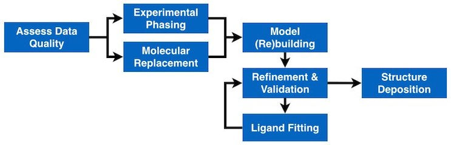
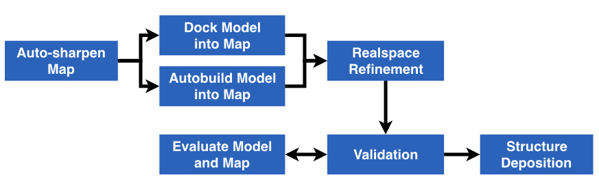

Phenix programs and their functions
The Phenix graphical interface
Overview of video tutorials
Tutorials and Examples
Dictionary of crystallographic and other terms
FAQs: Frequently asked questions
How to install, setup and run Phenix
Complete Phenix reference documentation
Bibliography
Index

Phenix Documentation for X-ray Crystallography
Checking data quality | Experimental phasing | Molecular replacement | Model building | Structure refinement
Structure validation | Ligand fitting | Making geometry restraints | Structure deposition| All

Phenix Documentation for Electron Microscopy (EM)
Structure refinement | Map statistics (resolution, etc) | Auto-sharpen a map | Dock a model into a map | Guess sequences from map | Flexibly fit a model to a map | Build a model | Making geometry restraints | Compare CA/P in two models | Identify symmetry in a map | Combine best parts of focused maps | Extract box with map and model | Convert map to structure factors | Segment a map | All
Structure refinement | Structure validation | Making geometry restraints | Structure deposition| All